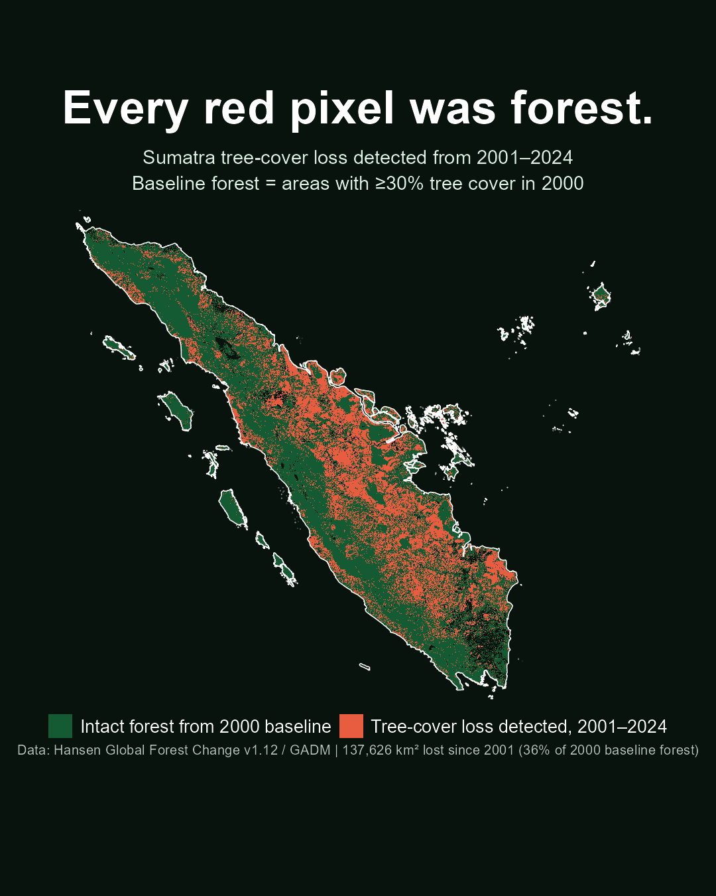
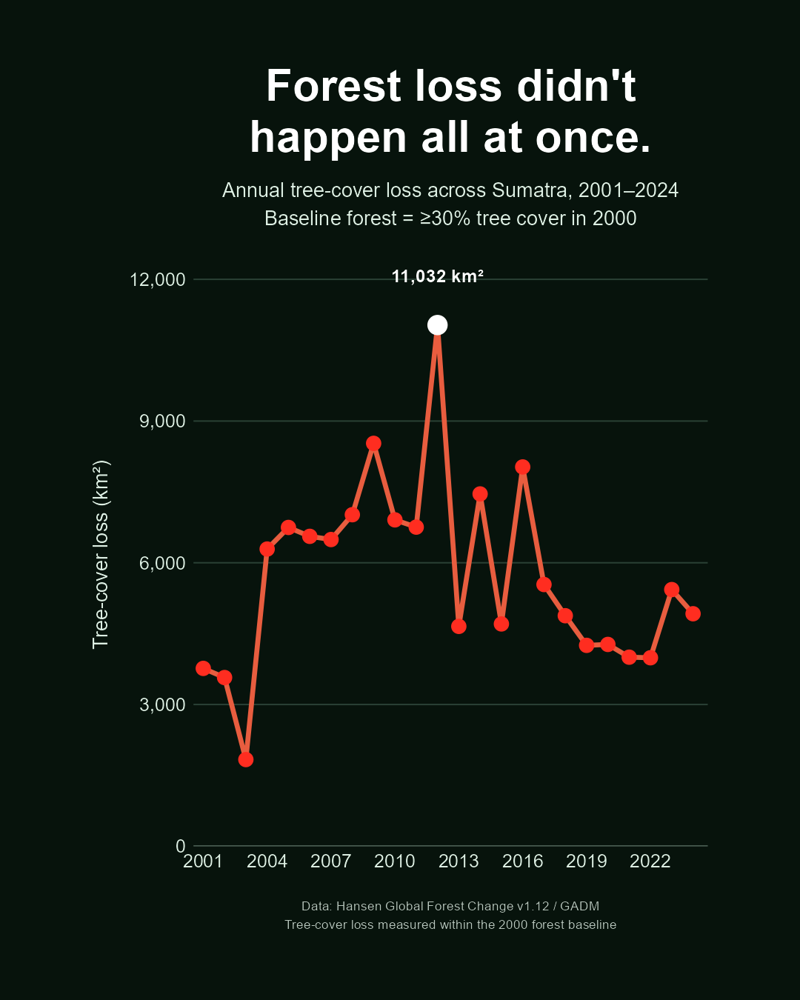
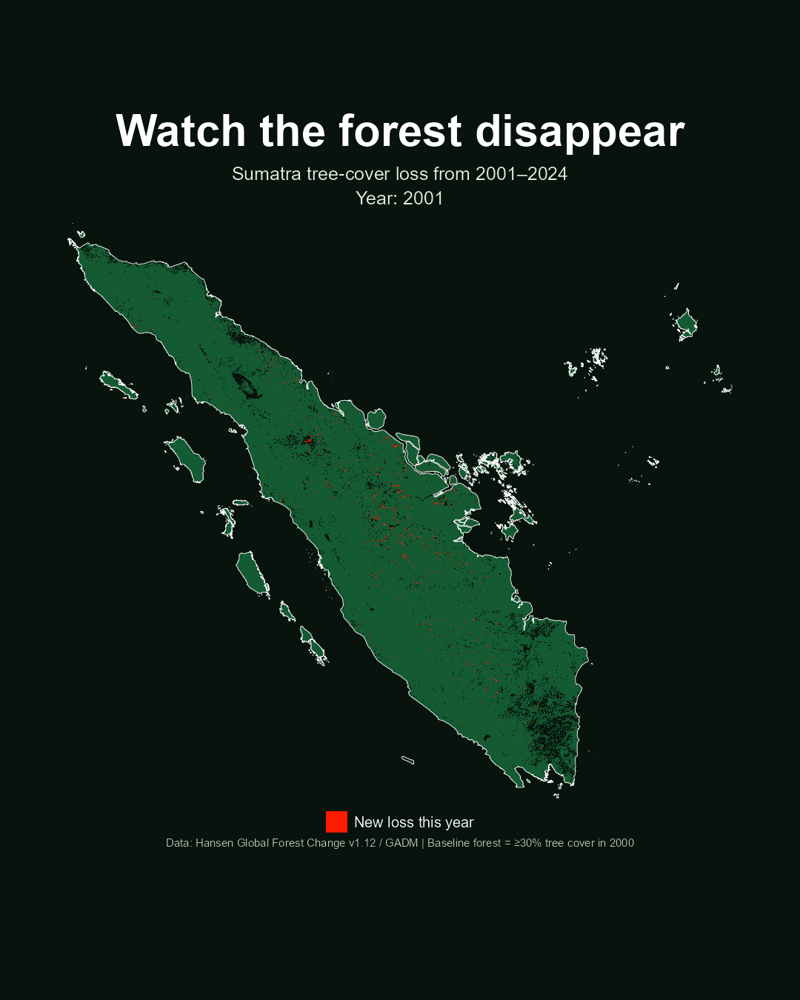

Sumatra Forest Loss Analysis

Project Overview
In this project, I used satellite-derived forest-cover data to examine more than two decades of tree-cover loss across Sumatra, Indonesia.
Using the Hansen Global Forest Change dataset, I established a baseline of areas with at least 30% tree cover in 2000 and tracked detected tree-cover loss within that baseline from 2001 through 2024.
The analysis combined spatial and temporal methods to answer not only how much forest cover was lost, but where and when that loss occurred. The resulting maps and time series reveal the cumulative transformation of Sumatra's forested landscape over the study period.
Background
Sumatra contains extensive tropical forests that support exceptionally high biodiversity and provide important ecosystem functions including carbon storage, watershed protection, and habitat for wildlife.
Over recent decades, large portions of the island's forested landscape have experienced tree-cover loss. Understanding this change requires more than a single before-and-after map. Annual satellite observations make it possible to reconstruct how loss accumulated across the landscape through time.
This project uses remotely sensed data to translate that long-term change into an accessible spatial and temporal analysis, allowing both the magnitude and geographic pattern of forest loss to be examined.
Questions
The analysis was organized around several related questions:
- How much of Sumatra's 2000 forest baseline experienced detected tree-cover loss between 2001 and 2024?
- Where across the island has tree-cover loss occurred?
- How did the amount of annual tree-cover loss change through time?
- Which years experienced particularly high levels of forest loss?
- What does the cumulative spatial pattern reveal about the transformation of Sumatra's forested landscape?
Analytical Approach
The analysis used the Hansen Global Forest Change v1.12 dataset, which provides satellite-derived information on global tree cover and annual tree-cover loss. Administrative and geographic boundaries were derived from GADM.
A forest baseline was first established using areas with at least 30% tree cover in 2000. Annual loss layers from 2001–2024 were then used to identify pixels within that baseline where tree-cover loss was detected.
The spatial data were processed across Sumatra and combined to calculate annual loss area in square kilometers. Annual results were then summarized as a time series, while the underlying raster information was used to map both cumulative and year-by-year changes across the island.
1. How Much Forest Cover Was Lost?
The cumulative analysis reveals extensive tree-cover loss across Sumatra between 2001 and 2024.
Across areas classified as forest under the 2000 baseline, approximately 137,626 km² of tree-cover loss was detected during the study period.
This represents approximately 36% of the forest area identified in the 2000 baseline.
The cumulative map makes the scale of this change visible: every highlighted loss pixel represents an area that met the forest baseline at the beginning of the analysis and subsequently experienced detected tree-cover loss.
2. When Did Forest Loss Occur?

Forest loss did not occur at a constant rate. Annual tree-cover loss varied substantially throughout the 2001–2024 record.
Loss increased sharply during portions of the 2000s and early 2010s, with the highest annual value occurring in 2012.
Approximately 11,032 km² of tree-cover loss was detected during that year alone, making it the largest annual loss observed in the analyzed record.
Annual loss subsequently declined from the highest values observed earlier in the record, although substantial tree-cover loss continued through 2024.
3. Where Did Forest Loss Progress Through Time?
Annual totals describe the magnitude of forest loss, but they do not show how that change unfolded spatially across Sumatra.
To visualize this progression, I created an animation that reconstructs the forest-loss record one year at a time from 2001 through 2024.
Each frame identifies newly detected loss for that year within the original 2000 forest baseline. Viewed sequentially, the animation illustrates how individual annual loss events accumulate into a much larger long-term transformation of the landscape.
This spatial perspective is particularly useful because similar annual totals can represent very different geographic patterns of change.

Landscape Interpretation
Looking at the three analyses together provides a more complete picture than any single statistic. The cumulative map shows the overall geographic extent of detected loss, the annual time series reveals when the greatest losses occurred, and the animation reconstructs how those changes accumulated across the landscape.
The results show that forest loss across Sumatra was neither spatially nor temporally uniform. Instead, the modern landscape reflects more than two decades of individual loss events occurring at different times and locations across the island.
Importantly, the Hansen dataset measures tree-cover loss. Detection of loss identifies a substantial change in tree cover but does not, by itself, identify the specific cause of that change or determine whether the loss was permanent.
Conclusion
Between 2001 and 2024, approximately 137,626 km² of tree-cover loss was detected within Sumatra's 2000 forest baseline, equivalent to approximately 36% of that baseline forest area.
The annual record shows that this transformation did not occur evenly through time. Loss varied markedly between years and reached a maximum of approximately 11,032 km² in 2012.
Combining satellite observations with spatial and temporal analysis makes it possible to move beyond a single measure of total forest loss and instead examine how much was lost, when it occurred, and where that change accumulated across the landscape.